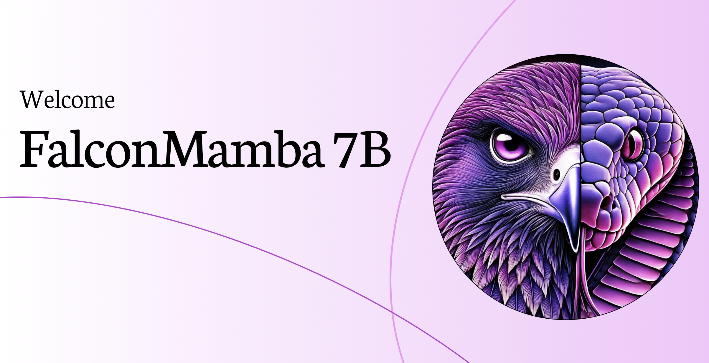
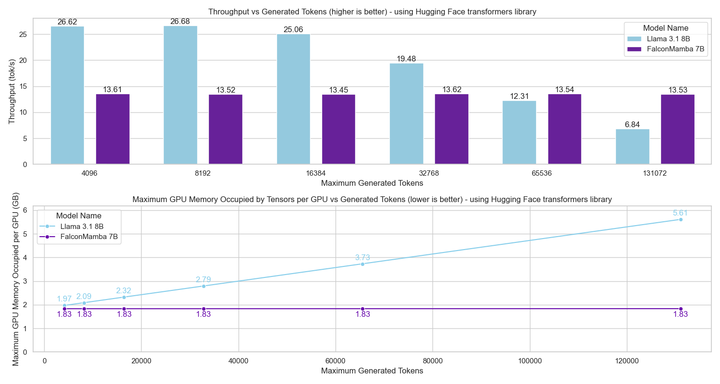

Summary
Falcon Mamba is the first pure State Space Language Model (SSLM) at 7B scale to achieve fully competitive performance with leading Transformer-based models. Trained on 5.8 trillion tokens of carefully curated data, it surpasses Mistral 7B, Llama 3.1-8B, and Falcon2-11B on standard benchmarks, and matches Gemma 7B — all without a single attention layer.
The significance extends beyond benchmark numbers. Transformer-based LLMs carry a fundamental inference cost: the KV cache grows linearly with sequence length, causing both memory consumption and generation latency to degrade at long contexts. Falcon Mamba eliminates this entirely. Its recurrent SSM state has fixed size regardless of how many tokens have been processed, yielding constant memory and constant per-token generation time at any sequence length. A single A10 24GB GPU can serve Falcon Mamba on sequences that would OOM a Transformer of the same parameter count.
At the time of release, Falcon Mamba was the best-performing pure SSM in the literature, outperforming RecurrentGemma 9B and all RWKV-v6 variants. It laid the empirical foundation for the later Falcon-H1 hybrid family, demonstrating that SSMs could be trusted at scale and were ready to be paired with attention in production-grade models.

Key Contributions
Core Result
First Competitive Pure SSM at 7B Scale
Prior to Falcon Mamba, the prevailing consensus was that pure SSMs could not match Transformer quality at the 7B scale — and that hybrid Mamba-Transformer architectures were necessary to bridge the gap. Falcon Mamba directly challenges this view. By training a pure Mamba model on 5.8 trillion tokens with careful data curation and stable training techniques, the team demonstrates that SSMs alone can achieve Transformer-competitive performance without any attention mechanism.
This result matters because it validates SSMs as a first-class architecture for large-scale language modeling, not just a niche efficiency tool. It directly motivated and de-risked the subsequent development of Falcon-H1, where SSM and attention heads are paired as equals rather than SSMs serving as a minor complement to a predominantly Transformer model.
Inference Efficiency
Constant Memory & Throughput at Any Sequence Length
Transformer inference has a well-known scaling problem: the KV cache stores key and value tensors for every past token, so memory grows linearly with context length and generation throughput falls as the cache fills GPU bandwidth. At 128K tokens a Transformer-based 7B model requires far more GPU memory than at 2K tokens, and each new token takes longer to generate.
Falcon Mamba has no KV cache. The SSM compresses all past context into a fixed-size recurrent state that is updated at each step, independent of how far back the sequence stretches. This yields two concrete guarantees: peak CUDA memory does not increase with sequence length, and token generation time remains constant from token 1 to token 130,000+. Both properties are demonstrated empirically at up to 130K tokens on an H100 GPU.
A practical consequence: Falcon Mamba fits on a single A10 24GB GPU for sequences that would cause a Transformer of equivalent parameter count to OOM. This opens deployment scenarios — long-document processing, streaming, embedded inference — that are structurally inaccessible to attention-based models at the same memory budget.
Training Stability
RMS Normalization & Data Curriculum for Stable SSM Training at Scale
Scaling pure SSMs to 7B parameters and 5.8 trillion tokens is non-trivial. Without attention's built-in gradient routing, SSMs are more susceptible to instability in the early stages of training and when data quality shifts abruptly. Falcon Mamba addresses this with two targeted modifications: additional RMS normalization layers inserted within each Mamba block to stabilize activations, and a training data curriculum that reserves a high-quality curated mixture for the final stage of training rather than distributing it uniformly.
The base training corpus draws primarily from RefinedWeb, supplemented with high-quality technical and code data. In the final training stage, the data mixture is enriched with curated high-quality sources, concentrating the most informative signal at the end of the run when the model's representational capacity is most developed.
Highlights
- First pure SSM to match leading Transformer 7B models: surpasses Mistral 7B, Llama 3.1-8B, Falcon2-11B; matches Gemma 7B.
- Best-performing pure SSM in the literature at release, outperforming RecurrentGemma 9B and all RWKV-v6 variants.
- LLM Leaderboard v1: ARC 62.03, HellaSwag 80.82, MMLU 62.11, Winogrande 73.64, GSM8K 52.54, average 64.09.
- Constant peak GPU memory regardless of sequence length — no KV cache, no memory scaling problem.
- Constant token generation throughput verified up to 130K tokens on H100; fits on a single A10 24GB GPU.
- Trained on 5.8 trillion tokens with a staged data curriculum; final stage enriched with high-quality curated data.
- Extra RMS normalization layers enable stable training of pure Mamba at 7B scale.
- Empirical foundation that de-risked SSM integration in the subsequent Falcon-H1 hybrid family.